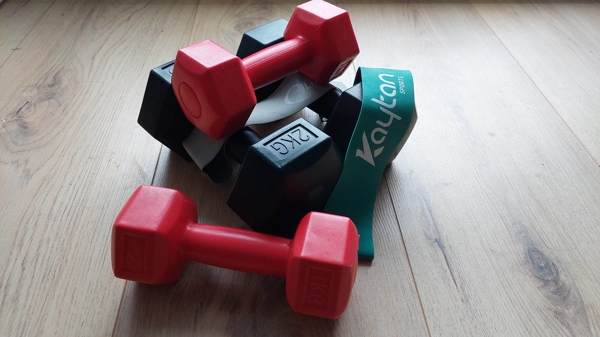

Ziektes
Er zijn meerdere ziektes die ervoor kunnen zorgen dat je overgewicht krijgt. Bijvoorbeeld mensen die een langzaam werkende schildklier hebben, hebben vaak last van overgewicht. Bij deze mensen werkt de stofwisseling trager. Dit houd in dat verschillende processen in je lichaam trager gaan. Een langzame schildklier is niet bij iedereen een blijvende klacht maar bij de meeste mensen is het wel blijvend. Er bestaan medicijnen die je schildklier kunnen helpen als de schildkier niet of bijna niet werkt, maar er is geen medicijn om de schildklier te genezen. Een andere ziekte die voor een gewichtstoename zorgt, is de syndroom van Cushing. Dit is een zeldzame ziekte en een verzamelnaam van klachten die maar 50 keer per jaar in Nederland wordt gediagnosticeerd. Het zorgt ervoor dat er te veel cortisol in je lichaam aanwezig is.

Overconsumptie/Weinig beweging
Overconsumptie en weinig beweging gaan hand in hand samen. Want de hoeveelheid calorieën die een persoon moet consumeren per dag is per persoon verschillend. Een zwemmer moet meer calorieën innemen per dag dan een persoon die achter de computer zit. Dit komt voornamelijk omdat de zwemmer veel meer calorieën gebruikt doordat hij of zij een sport waar je heel intensief beweegt uitoefent.. Dit betekent niet dat er geen gemiddelde hoeveelheid aan calorieën voor vrouwen en mannen is. Een man zou dagelijks ongeveer 2500kcal moeten innemen en een vrouw ongeveer 2000kcal. Eet je meer calorieën dan dat je gebruikt, worden deze omgezet in vet. Dus als je iets aan je overgewicht wilt doen, is het verstandig om je te gaan verdiepen in de samenstelling van suikers, vetten, proteïnen, koolhydraten ,vitaminen en mineralen in voedsel dat je eet. Het is belangrijk dat je de juiste hoeveelheid van deze stoffen die voor je lichaam belangrijk zijn, binnen krijgt. Maar zeker niet meer dan je lichaam nodig heeft om te kunnen functioneren.
